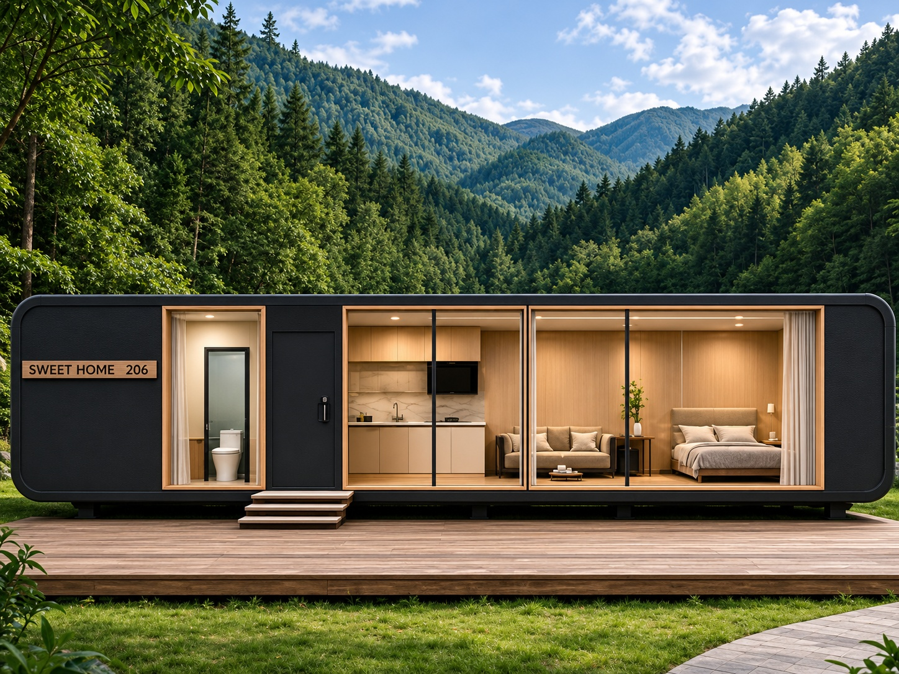
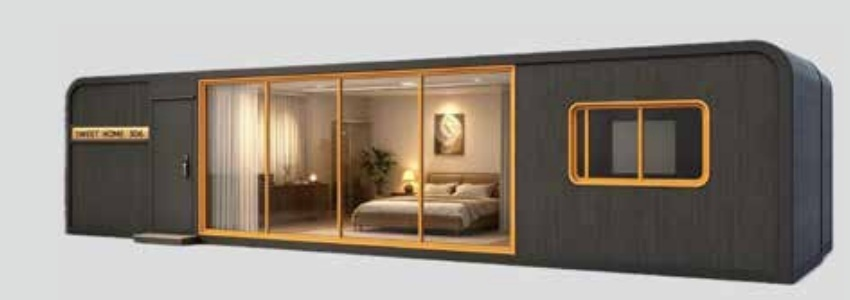
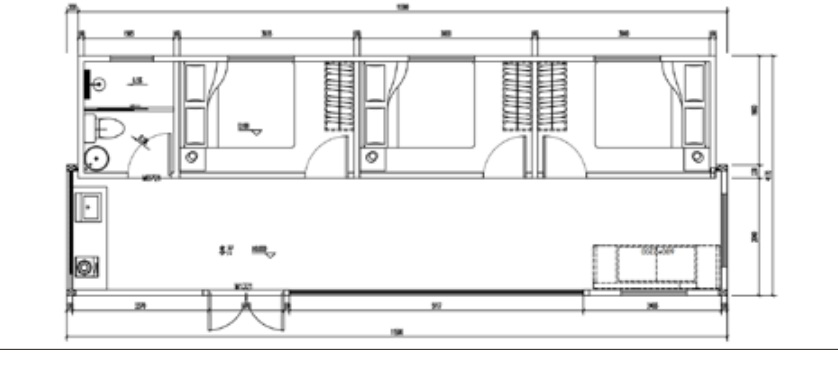

Modules extensibles
C2-3
48 m² annoncésSurface annoncée · Sur devis
Le format allongé de la gamme extensible.

L’esprit du modèle
Un espace pour
votre projet.
Le C2-3 est la version longue de cette famille de modules. Le fournisseur présente plusieurs usages résidentiels ou d’hébergement. Le choix des pièces et la configuration finale font l’objet d’une étude.
- Version longue
- Volume extensible
- Agencement à définir
Pour regarder de plus près
Les références fournisseur.
Vues d’origine issues de la brochure fournisseur, page 29. Cliquez pour agrandir.


Agrandir ↗

Agrandir ↗Surfaces annoncées dans la documentation fournisseur, non certifiées comme surfaces habitables. Les illustrations ne valent pas validation de résistance au vent, de conformité réglementaire ou d’aptitude au milieu salin.
← Explorer les autres modèles